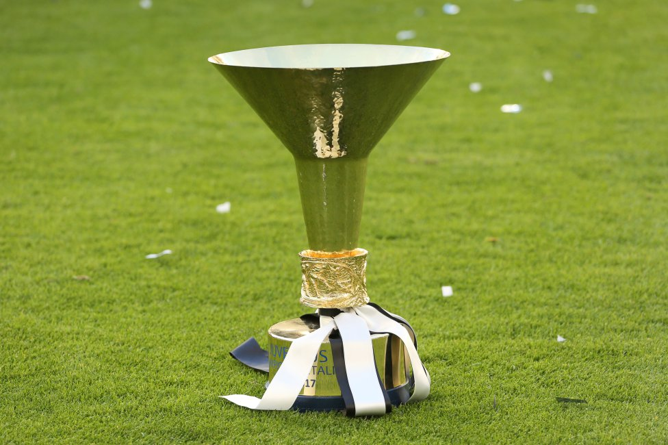

SERIE A TIM

La Primera de Italia, mas conocida como Serie A se inicio en 1899, es la maxima cagtegoria en Italia.
RANKING DE MAXIMOS GANADORES
| EQUIPO | LIGAS |
|---|---|
| Juventus | 36 |
| Inter | 19 |
| Milan | 19 |
| Geona | 9 |
| Torino | 7 |
| Bologna | 7 |
| Pro Vercelli | 7 |
| Roma | 3 |
| Napoli | 2 |
| Lazio | 2 |
| Fiorentina | 2 |
| Cagliari | 1 |
| Casale | 1 |
| Novese | 1 |
| Hellas Verona | 1 |
| Sampdoria | 1 |
TODOS LOS GANADORES
| AÑO | EQUIPO |
|---|---|
| 2021/22 | Milan (19) |
| 2020/21 | Inter (19) |
| 2019/20 | Juventus (36) |
| 2018/19 | Juventus (35) |
| 2017/18 | Juventus (34) |
| 2016/17 | Juventus (33) |
| 2015/16 | Juventus (32) |
| 2014/15 | Juventus (31) |
| 2013/14 | Juventus (30) |
| 2012/13 | Juventus (29) |
| 2011/12 | Juventus (28) |
| 2010/11 | Milan (18) |
| 2009/10 | Inter (18) |
| 2008/09 | Inter (17) |
| 2007/08 | Inter (16) |
| 2006/07 | Inter (15) |
| 2005/06 | Inter (14) |
| 2003/04 | Milan (17) |
| 2002/03 | Juventus (27) |
| 2001/02 | Juventus (26) |
| 2000/01 | Roma (3) |
| 1999/00 | Lazio (2) |
| 1998/99 | Milan (16) |
| 1997/98 | Juventus (25) |
| 1996/97 | Juventus (24) |
| 1995/96 | Milan (15) |
| 1994/95 | Juventus (23) |
| 1993/94 | Milan (14) |
| 1992/93 | Milan (13) |
| 1991/92 | Milan (12) |
| 1990/91 | Sampdoria (1) |
| 1989/90 | Napoli (2) |
| 1988/89 | Inter (13) |
| 1987/88 | Milan (11) |
| 1986/87 | Napoli (1) |
| 1985/86 | Juventus (22) |
| 1984/85 | Hellas Verona (1) |
| 1983/84 | Juventus (21) |
| 1982/83 | Roma (2) |
| 1981/82 | Juventus (20) |
| 1980/81 | Juventus (19) |
| 1979/80 | Inter (12) |
| 1978/79 | Milan (10) |
| 1977/78 | Juventus (18) |
| 1976/77 | Juventus (17) |
| 1975/76 | Torino (7) |
| 1974/75 | Juventus (16) |
| 1973/74 | Lazio (1) |
| 1972/73 | Juventus (15) |
| 1971/72 | Juventus (14) |
| 1970/71 | Inter (11) |
| 1969/70 | Cagliari (1) |
| 1968/69 | Fiorentina (2) |
| 1967/68 | Milan (9) |
| 1966/67 | Juventus (13) |
| 1965/66 | Inter (10) |
| 1964/65 | Inter (9) |
| 1963/64 | Bologna (7) |
| 1962/63 | Inter (8) |
| 1961/62 | Milan (8) |
| 1960/61 | Juventus (12) |
| 1959/60 | Juventus (11) |
| 1958/59 | Milan (7) |
| 1957/58 | Juventus (10) |
| 1956/57 | Milan (6) |
| 1955/56 | Fiorentina (1) |
| 1954/55 | Milan (5) |
| 1953/54 | Inter (7) |
| 1952/53 | Inter (6) |
| 1951/52 | Juventus (9) |
| 1950/51 | Milan (4) |
| 1949/50 | Juventus (8) |
| 1948/49 | Torino (6) |
| 1947/48 | Torino (5) |
| 1946/47 | Torino (4) |
| 1945/46 | Torino (3) |
| 1942/43 | Torino (2) |
| 1941/42 | Roma (1) |
| 1940/41 | Bologna (6) |
| 1939/40 | Inter (5) |
| 1938/39 | Bologna (5) |
| 1937/38 | Inter (4) |
| 1936/37 | Bologna (4) |
| 1935/36 | Bologna (3) |
| 1934/35 | Juventus (7) |
| 1933/34 | Juventus (6) |
| 1932/33 | Juventus (5) |
| 1931/32 | Juventus (4) |
| 1930/31 | Juventus (3) |
| 1929/30 | Inter (3) |
| 1928/29 | Bologna (2) |
| 1927/28 | Torino (1) |
| 1925/26 | Juventus (2) |
| 1924/25 | Bologna (1) |
| 1923/24 | Geona (9) |
| 1922/23 | Geona (8) |
| 1921/22 (CCI) | Pro Vercelli (7) |
| 1921/22 (FGIC) | Novese (1) |
| 1920/21 | Pro Vercelli (6) |
| 1919/20 | Inter (2) |
| 1914/15 | Geona (7) |
| 1913/14 | Casale (1) |
| 1912/13 | Pro Vercelli (5) |
| 1911/12 | Pro Vercelli (4) |
| 1910/11 | Pro Vercelli (3) |
| 1909/10 | Inter (1) |
| 1909 | Pro Vercelli (2) |
| 1908 | Pro Vercelli (1) |
| 1907 | Milan (3) |
| 1906 | Milan (2) |
| 1905 | Juventus (1) |
| 1904 | Geona (6) |
| 1903 | Geona (5) |
| 1902 | Geona (4) |
| 1901 | Milan (1) |
| 1800 | Geona (3) |
| 1899 | Geona (2) |
| 1898 | Geona (1) |